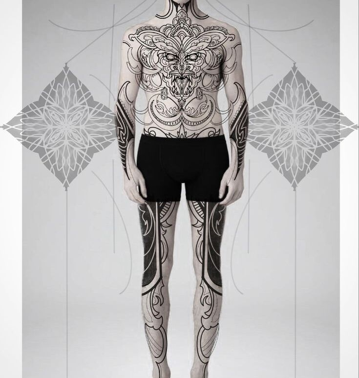
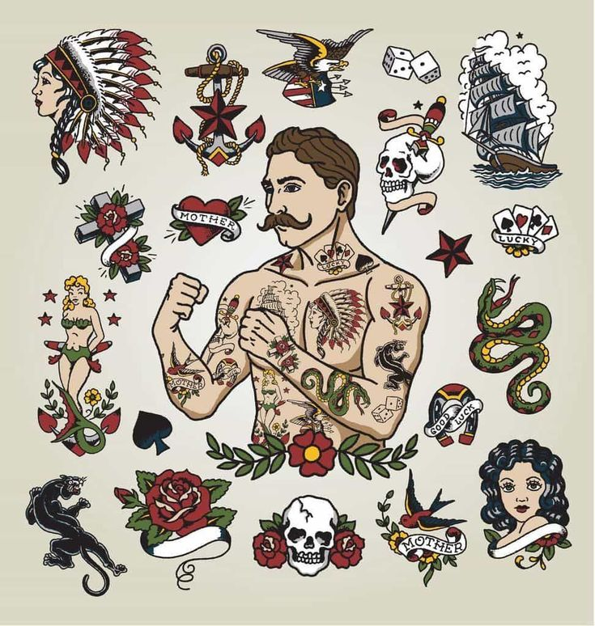

<div class="container">
    <div class="row">
        <h1>𝕷𝖔𝖘 𝖉𝖔𝖘 𝖙𝖎𝖕𝖔𝖘 𝖉𝖊 𝖙𝖆𝖙𝖙𝖔𝖔 𝖖𝖚𝖊 𝖊𝖝𝖎𝖘𝖙𝖊𝖓</h1>

        <div class="col">
            <mat-card class="contenido">
                <mat-card-header>
                    <mat-card-title>Bodysuit</mat-card-title>
                </mat-card-header>
                <mat-card-content>
                    <p>El bodysuit es un tatuaje que cubre gran parte del cuerpo, creando un diseño continuo y cohesivo. Este estilo permite integrar múltiples elementos y patrones, ofreciendo una expresión artística integral. Es popular entre quienes buscan un look impactante y creativo..</p>
                    
                </mat-card-content>
                <mat-card-actions>
                    <span></span>
                    <div style="flex-grow: 1;"></div> <!-- Espaciador -->
                </mat-card-actions>
            </mat-card>
        </div>
        
        <div class="col">
            <mat-card class="contenido">
                <mat-card-header>
                    <mat-card-title>Parche</mat-card-title>
                </mat-card-header>
                <mat-card-content>
                    <p>El tatuaje de parche es un diseño más pequeño que se coloca en áreas específicas del cuerpo. Estos tatuajes simbolizan momentos importantes o tributos personales y pueden variar en estilo, desde simples símbolos hasta elaboradas ilustraciones. Son ideales para quienes prefieren un enfoque más discreto.</p>
                    
                </mat-card-content>
                <mat-card-actions>
                    <span></span>
                    <div style="flex-grow: 1;"></div> <!-- Espaciador -->
                </mat-card-actions>
            </mat-card>
        </div>